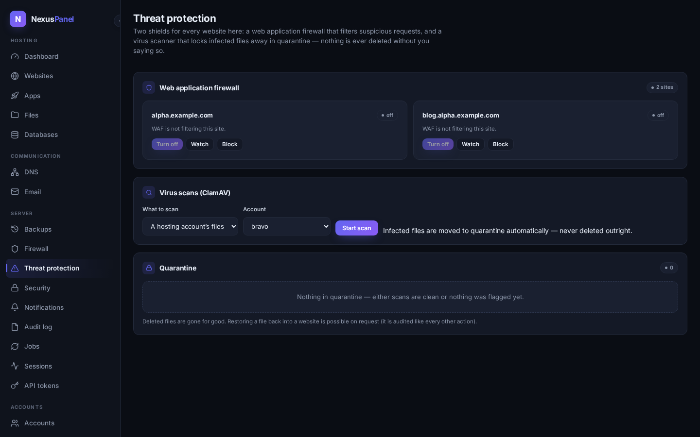

Threat protection (WAF & virus scanning)
Every website gets two shields. The web application firewall (ModSecurity with the OWASP Core Rule Set) filters suspicious requests before they reach your code. The virus scanner (ClamAV) walks site files on demand or on a schedule and locks anything infected away in quarantine. Both are one-click to change and safe by default.

Per-site firewall posture live in the panel
Each site card offers three honest modes. Off removes
the site's WAF include entirely. Watch (detect) runs
the rule set in DetectionOnly — suspicious requests are
logged but still served, the safe way to learn what would have been
blocked. Block switches the engine to
On: the CRS verdict is enforced. There is also a
paranoia level (1 standard, 2 aggressive for high-value
sites), and rule exclusions for the rare false positive your
application genuinely triggers.
Changing the posture never edits a live ruleset line by line. The agent
writes the site's include, runs the nginx health gate
(nginx -t + reload) and — if the test fails — rolls the
file back, leaving the old posture running. Every applied posture is a
versioned row in the configuration engine, so WAF changes ride the same
history and rollback as every other vhost change (ADR-0017).
Virus scanning live in the panel
Start a scan for one account's files or the whole server. Infected files are quarantined, never deleted in place: the agent moves them into a locked quarantine area (structure preserved, permissions tightened) and the panel records the finding with its ClamAV signature. The scan table shows real counters — files scanned, infected, quarantined — straight from the node.
The quarantine view is where the false-positive safety net lives. Delete destroys a quarantined artifact after an explicit confirmation, and it is audited. Restoring a file back into the site is equally possible and equally audited — that is the designed answer to a signature false positive. Nothing in this flow ever deletes anything automatically.
Not yet (honest list)
- Scheduled scans — the cron engine is the job framework (B13); today scans are on demand.
- CRS exclusion UX is rule-id based; a curated "known false positives" picker lands with the P5 hardening pass.
- clamd (daemon) scanning is used when installed; a persistent signature-database update job follows the B13 scheduler.
- Per-reseller WAF templates are future work; posture is per-site today.